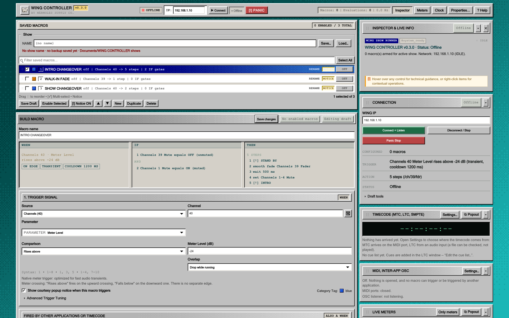

WING CONTROLLERMÁRMOLES SUPPLY CO.
WING CONTROLLERMÁRMOLES SUPPLY CO.WING CONTROLLER
Macros, meters, and more
for Behringer WING.
Apple Silicon · macOS
Community beta · Source available
Main workstation

A detail of the app's interface.
Example selection; no console connected.
github.com/marmoles-supply/wing-controllerOffline interface example